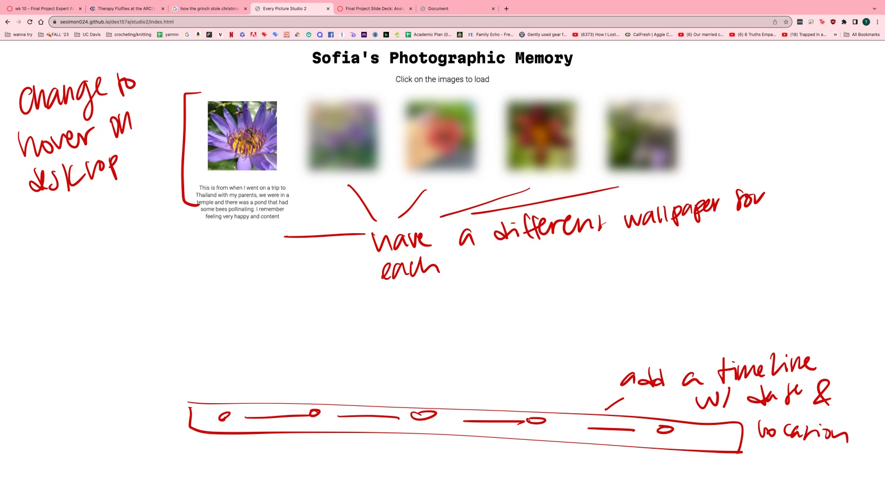

Who critiqued your work and what qualifications do they possess that makes their opinions on design valid?
Expert 1: Sky, our 157A Tutor, was one of my experts and their opinions are valid because they have been working in creating websites and designing them for a while now and are aiding us in this course.
Expert 2: I met with my cousin and her opinion is valid becuase she works with visual communication and UI/UX on a day-to-day basis for her job.
Design critique notes: what is strong and what can be improved in terms of visual design for the project.
Expert 1 (Sky the 157A Tutor): they noted that some of my strong points were my consistency across the images and transitions and the responsiveness. They noted that I could imporove upon the design by adding some visual elements, like a patterned background. They also mentioned that I might consider referencing the slideshow that we made in class to adapt my code if I wanted to make it more interactive.
Expert 2 (Cousin who works in UX/UI): she agreed with the tutor, saying my strong point was my consistency across the images and transitions and the responsiveness. She mentioned that I might consider having the background change, but to keep in mind that I should watch out for legibility with the text if I choose to do so.
Design critique notes: what is strong and what can be improved in terms of visual design for the project.
I plan to implement some changes, like making the transitions shift when you hover over the image [right now you have to click them] and creating backgrounds that are specific to each image.